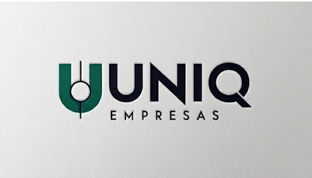
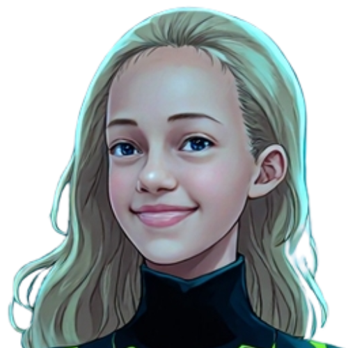
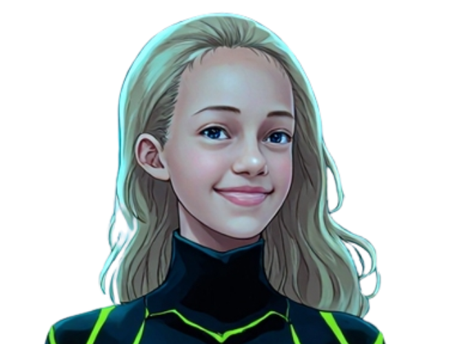
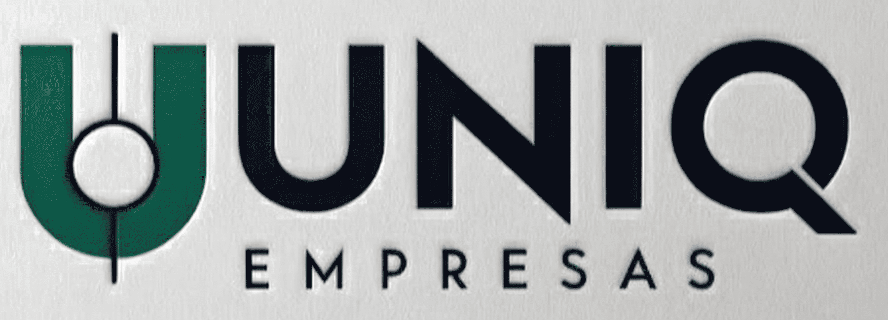

UNIQ Empresas · Alto Tietê
No dia a dia, tudo depende de você — e não sobra tempo para olhar o todo. Sua empresa precisa de alguém que cuide dela e aponte o caminho.
E o negócio sem sair do lugar.
O custo de continuar assim
Sem margem real, você lucra menos vendendo mais.
Sem dados, cada escolha vira aposta.
Preso à operação, você é o funcionário do próprio negócio.
O problema não é esforço. É a falta de estrutura para crescer.
A UNIQ Empresas
Temos tecnologia — não somos uma empresa de tecnologia.
Trazer mais dinheiro e dar fôlego.
Não trabalhar muito e ganhar pouco.
De jogador a quem controla o jogo.
Consultoria + tecnologia a serviço do objetivo.
Objetivo 1
Primeiro, o dinheiro precisa entrar.
Isso tira você de ser funcionário da sua empresa e te põe na gestão.
Objetivo 2
Não basta trazer dinheiro — é saber para onde ele vai.
Fazer mais dinheiro entrar e menos sair. Isso é margem.
Objetivo 3
É o que faz os outros dois durarem.

A empresa deveria trabalhar para você.
O diferencial
Consultoria tradicional é uma reunião por mês e um relatório.
Acompanha o seu negócio diariamente.
O conhecimento de uma consultoria, com a presença de um sócio.

Como trabalhamos
Você conta como a empresa funciona.
Módulos e fluxos pensados para você.
MVP rodando. Nós operamos.
MVP entregue em até 2 meses. Quem opera é a UNIQ.
Por que entrar agora
Poucas empresas, atenção individual.
Você participa da construção.
O preço de fundador é real — só para os 12 primeiros.
Valor cheio
Após os 12 co-fundadores
R$1.500 · setup
+ R$ 297/mês
Co-Fundador
Apenas 12 parceiros
R$500 · setup
R$197/mês
A visão
O foco hoje não é lucro — é prova social real.

Me conta como a sua empresa funciona hoje. A gente escuta, diagnostica e desenha o caminho — mesmo que você queira pensar, a conversa é o ponto de partida.
UNIQ Empresas · Consultoria para pequenas e médias empresas · Alto Tietê